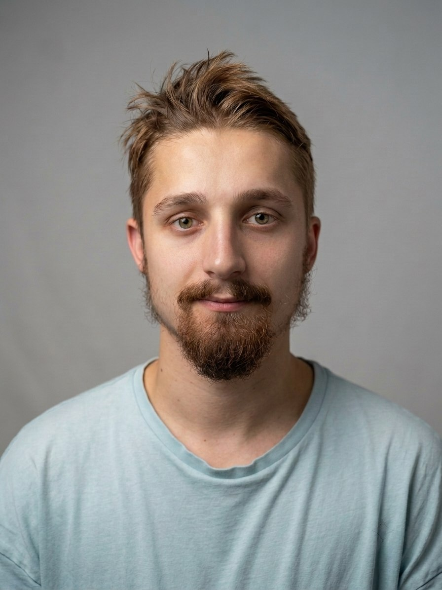
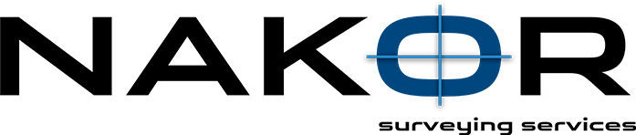
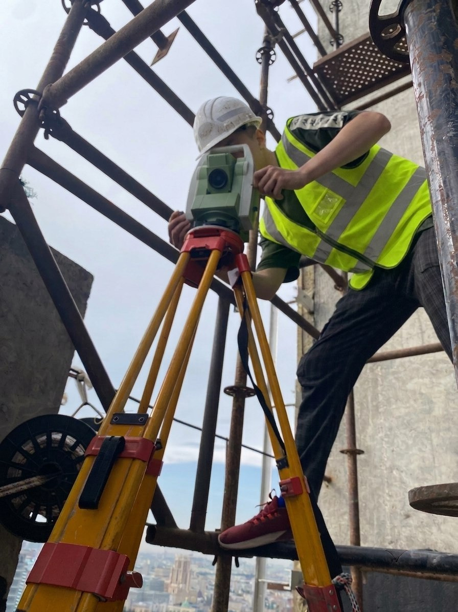

Даниил Сапожков
Специализируюсь на полевых и камеральных работах, контроле геометрии конструкций, разбивочных работах и подготовке исполнительной документации.
Работаю на премиум‑объектах в Москве (ЖК на ЗИЛ, Гагаринский и другие).
От помощника до самостоятельного геодезиста
Начал карьеру в компании «Накор‑К» в должности помощника геодезиста в 2023 году. За 3 года освоил все этапы геодезического сопровождения строительства: от приёмки геодезической основы до сдачи исполнительных схем заказчику.


Самостоятельно веду объекты в Москве – жилые комплексы на территории ЗИЛ, Гагаринский и другие. Работаю с высотными домами, сложными фасадами и витражами, требующими высокой точности.
В работе стараюсь быть внимательным и осторожным, соблюдаю требования нормативной документации (ГОСТы, СП) там, где это необходимо для обеспечения качества измерений и надёжности результатов. Постоянно повышаю квалификацию, слежу за обновлениями в геодезическом законодательстве.
Московский автомобильно-дорожный колледж им. Николаева
Среднее специальное образование
Специальность: Строительство и эксплуатация дорог и аэродромов
Год окончания: 2022
Форма обучения: очная (4 года)
Основные направления работ
Разбивочные работы

Подготовка и вынос проектных осей, точек и отметок
Разбивочные работы
Подготовка и вынос проектных осей, точек и отметок